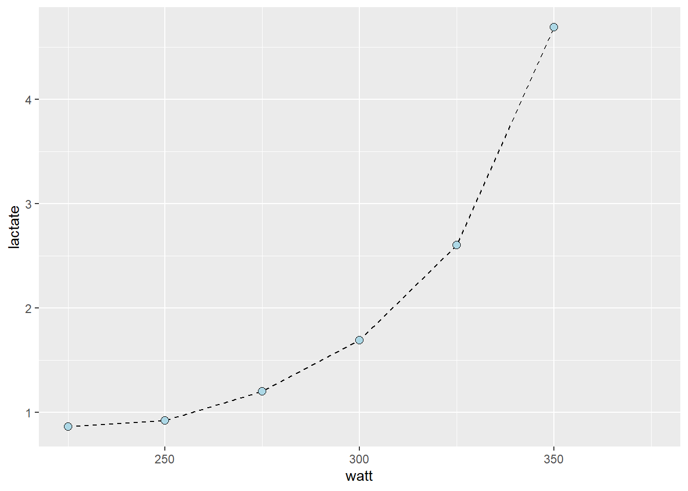
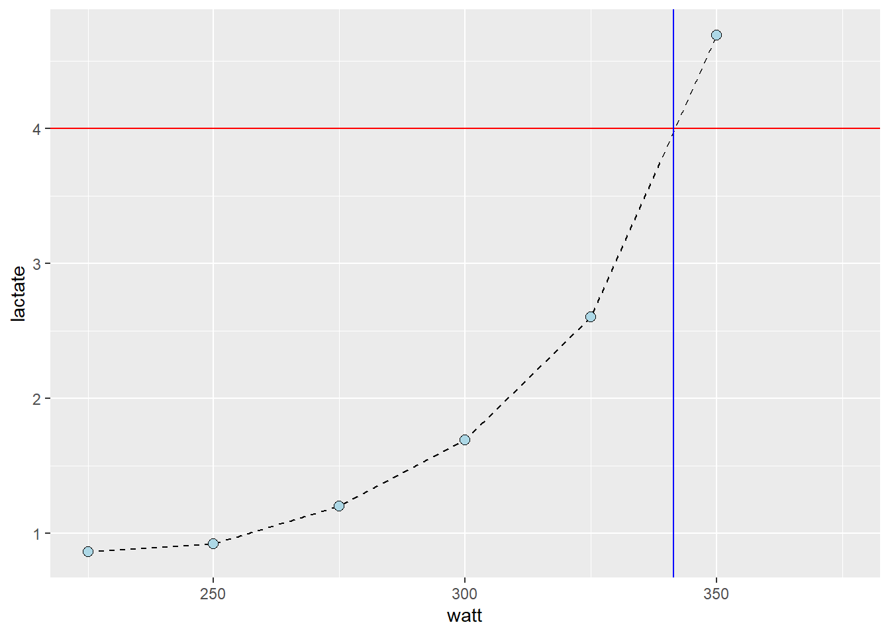
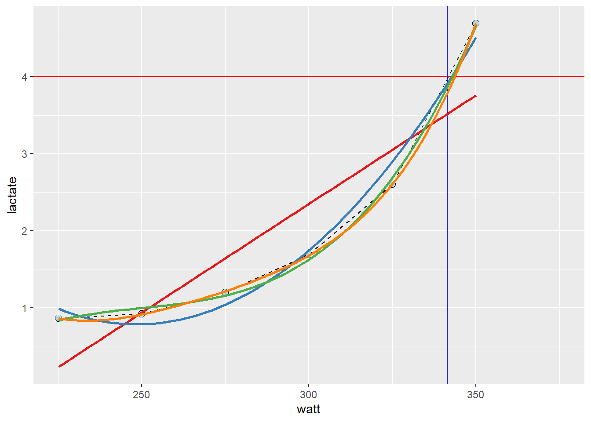

# An example function
my_fun <- function(arg1, arg2) { # Name and arguments of the function
# This is the body
sum <- arg1 + arg2
return(sum)
}
my_fun(2, 4)Writing R functions and calculate a lactate threshold
For a comprehensive overview of writing functions in R, Chapter 19 in (Wickham and Grolemund 2017) contains an excellent introduction.
Why write functions
- You should invest in writing functions, if you plan to re-use code by copy paste more than once (Wickham and Grolemund 2017).
- Functions can make your code more readable, reusable and make sure you minimize errors.
- The DRY principle applies → Do not repeat yourself (Wickham and Grolemund 2017).
What is a function?
- R is easily “extended” through the creation of function.
- Functions can live inside package that you or someone else has written.
- Functions can also live in your environment after being defined in your script.
mean(),sd()mutate()andggplot()are examples of functions that comes with the basic installation of R or packages.- For a function to live in your environment, it must have a name
- The function can come with a set of arguments
- The actual mechanics of the function is defined in the body
Naming the function
- The same rules apply to naming functions as other R objects.
- (Wickham and Grolemund 2017) recommend longer and informative/descriptive names written in “snake_case” (as opposed to “camelCase”).
- Be consistent!
- Do not use names of other function!
Arguments
- A function may be defined with named arguments, this is the “input” of the function.
- An argument may be a data frame, a single value or vector that the function will use.
- The function can be used with the arguments used in their place or named out of place.
# An example function
my_fun <- function(value1, value2) { # Name and arguments of the function
# This is the body
diff <- value1 - value2
return(diff)
}
# these are different
my_fun(value2 = 1, value1 = 4)
my_fun(1, 4)Body
- The function body defines the output of the function
- It usually makes use of the data/values/variables defined in the arguments and returns a given output
- Output can be any R object.
- The
return()function is used to explicitly make some part of the body to the output of the function
# An example function
my_fun <- function(value1, value2) { # Name and arguments of the function
# This is the body
diff <- value1 - value2
sum <- value1 + value2
results <- list()
results$diff <- diff
results$sum <- sum
return(results)
}
# these are different
my_fun(value2 = 1, value1 = 4)
my_fun(1, 4)Environment
- If a variable is not defined in the function, R will try to look for it in the environment.
- It is considered good practice to not rely on variables not defined in the function
# An example function
# A variable defined outside the function
value1 <- 3
my_fun <- function(value2) { # Name and arguments of the function
# This is the body
diff <- value1 - value2
sum <- value1 + value2
results <- list()
results$diff <- diff
results$sum <- sum
return(results)
}
my_fun(value2 = 1)
my_fun(5)Conditions, errors and messages
- Functions can include conditional sections, using
ifmakes it possible to make the function flexible depending on input variables
my_fun <- function(value1, value2, calculate.sum = FALSE) {
if (calculate.sum == TRUE) {
sum <- value1 + value2
return(sum)
} else {
print("No sum calculated")
}
}
# Calculates the sum
my_fun(2, 4, TRUE)
# Does not calculate the sum
my_fun(2, 4, FALSE)- A function can stop if the input variable is of the wrong type,
my_fun <- function(value1, value2) {
if (!any(is.numeric(c(value1, value2)))) {
stop("One or more values are not numeric")
} else {
sum <- value1 + value2
return(sum)
}
}
# Calculates the sum
my_fun(value1 = "error?", value2 = 4)
# Does not calculate the sum
my_fun(value1 = 2, value2 = 4)- There are several additional ways to create conditional operations (see (Wickham and Grolemund 2017)).
Group work
- Write a function that is reusable using this code:
z <- df$var1 - mean(df$var1, na.rm = TRUE) / sd(df$var1, na.rm = TRUE)Write a function that stops if the input is not a character vector
Write a function that calculates the standard deviation
\[s=\sqrt{\frac{\sum(x_i-\bar{x})^2}{n-1}}\]
# An example vector
x <- c(2, 5, 7, 8)
# Sum of squares
ss <- sum((x - mean(x))^2)
## Calculates standard deviation
s <- sqrt(ss / (length(x)-1))A function to calculate lactate thresholds
- Lactate threshold (LT) tests are commonly performed in the laboratory
- Calculations of the LT differs between labs and there are many methods
- A possible method is to calculate the power at a fixed lactate value (e.g. 4 mmoL L-1)
library(tidyverse)
library(exscidata)
data("cyclingstudy")
cyclingstudy %>%
# Select columns needed for analysis
select(subject, group, timepoint, lac.225:lac.375) %>%
# Only one participant and time-point
filter(timepoint == "pre", subject == 10) %>%
# Pivot to long format data using the lactate columns
pivot_longer(names_to = "watt",
values_to = "lactate",
names_prefix = "lac.",
names_transform = list(watt = as.numeric),
cols = lac.225:lac.375) %>%
# Plot the data, group = subject needed to connect the points
ggplot(aes(watt, lactate, group = subject)) +
geom_line(lty = 2) +
geom_point(shape = 21, fill = "lightblue", size = 2.5) 
- Manually, we could estimate the watt at a specific lactate using ocular inspection
cyclingstudy %>%
# Select columns needed for analysis
select(subject, group, timepoint, lac.225:lac.375) %>%
# Only one participant and time-point
filter(timepoint == "pre", subject == 10) %>%
# Pivot to long format data using the lactate columns
pivot_longer(names_to = "watt",
values_to = "lactate",
names_prefix = "lac.",
names_transform = list(watt = as.numeric),
cols = lac.225:lac.375) %>%
# Plot the data, group = subject needed to connect the points
ggplot(aes(watt, lactate, group = subject)) +
geom_line(lty = 2) +
geom_point(shape = 21, fill = "lightblue", size = 2.5) +
# Adding straight lines at specific values
geom_hline(yintercept = 4, color = "red") +
geom_vline(xintercept = 341.5, color = "blue")
- A better approximation can be derived from the curve linear model
cyclingstudy %>%
# Select columns needed for analysis
select(subject, group, timepoint, lac.225:lac.375) %>%
# Only one participant and time-point
filter(timepoint == "pre", subject == 10) %>%
# Pivot to long format data using the lactate columns
pivot_longer(names_to = "watt",
values_to = "lactate",
names_prefix = "lac.",
names_transform = list(watt = as.numeric),
cols = lac.225:lac.375) %>%
# Plot the data, group = subject needed to connect the points
ggplot(aes(watt, lactate, group = subject)) +
geom_line(lty = 2) +
geom_point(shape = 21, fill = "lightblue", size = 2.5) +
geom_hline(yintercept = 4, color = "red") +
geom_vline(xintercept = 341.5, color = "blue") +
# Adding a straight line from a linear model
geom_smooth(method = "lm", se = FALSE, formula = y ~ x, color = "#e41a1c") +
# Adding a polynomial linear model to the plot
# poly(x, 2) add a second degree polynomial model.
geom_smooth(method = "lm", se = FALSE, formula = y ~ poly(x, 2), color = "#377eb8") +
# poly(x, 3) add a third degree polynomial model.
geom_smooth(method = "lm", se = FALSE, formula = y ~ poly(x, 3), color = "#4daf4a") +
# poly(x, 4) add a forth degree polynomial model.
geom_smooth(method = "lm", se = FALSE, formula = y ~ poly(x, 4), color = "#ff7f00") 
- These models are all “wrong but some are useful”1
lactate <- cyclingstudy %>%
# Select columns needed for analysis
select(subject, group, timepoint, lac.225:lac.375) %>%
# Only one participant and time-point
filter(timepoint == "pre", subject == 10) %>%
# Pivot to long format data using the lactate columns
pivot_longer(names_to = "watt",
values_to = "lactate",
names_prefix = "lac.",
names_transform = list(watt = as.numeric),
cols = lac.225:lac.375) %>%
# Remove NA (missing) values to avoid warning/error messages.
filter(!is.na(lactate))
# fit "straight line" model
m1 <- lm(lactate ~ watt, data = lactate)
# fit second degree polynomial
m2 <- lm(lactate ~ poly(watt, 2, raw = TRUE), data = lactate)
# fit third degree polynomial
m3 <- lm(lactate ~ poly(watt, 3, raw = TRUE), data = lactate)
# fit forth degree polynomial
m4 <- lm(lactate ~ poly(watt, 4, raw = TRUE), data = lactate)
# Store all residuals as new variables
lactate$resid.m1 <- resid(m1)
lactate$resid.m2 <- resid(m2)
lactate$resid.m3 <- resid(m3)
lactate$resid.m4 <- resid(m4)
lactate %>%
# gather all the data from the models
pivot_longer(names_to = "model",
values_to = "residual",
names_prefix = "resid.",
names_transform = list(residual = as.numeric),
cols = resid.m1:resid.m4) %>%
# Plot values with the observed watt on x axis and residual values at the y
ggplot(aes(watt, residual, fill = model)) + geom_point(shape = 21, size = 3) +
# To set the same colors/fills as above we use scale fill manual
scale_fill_manual(values = c("#e41a1c", "#377eb8", "#4daf4a", "#ff7f00"))
- Using the
predict()function we can predict lactate values at a specific power output. - We are modelling the effect of watt on lactate, so we are unable to input a specific lactate value, instead we could approximate with “inverse prediction
ndf <- data.frame(watt = seq(from = 225, to = 350, by = 0.1)) # high resolution, we can find the nearest10:th a watt
ndf$predictions <- predict(m3, newdata = ndf)
# Which value of the predictions comes closest to our value of 4 mmol L-1?
# abs finds the absolute value, makes all values positive,
# predictions - 4 givs an exact prediction of 4 mmol the value zero
# filter the row which has the prediction - 4 equal to the minimal absolut difference between prediction and 4 mmol
lactate_threshold <- ndf %>%
filter(abs(predictions - 4) == min(abs(predictions - 4)))
Group work
- Write a function that calculates the lactate threshold using a fixed lactate value.
- The function should have arguments that defines the data and lactate value
- The output should be a value of the approximate watt at the fixed lactate
References
Wickham, Hadley, and Garrett Grolemund. 2017. R for Data Science: Import, Tidy, Transform, Visualize, and Model Data. 1st ed. Paperback; O’Reilly Media. http://r4ds.had.co.nz/.
Footnotes
See https://en.wikipedia.org/wiki/All_models_are_wrong↩︎